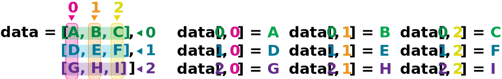

Loading and analyzing data#
Now that we’ve covered some Python basics and worked with a small amount of traffic data in a list, we’ll learn how to work with the entire dataset—multiple days worth of traffic data. We’re going to use professional-grade tools (NumPy) to analyze the entire dataset and answer bigger questions.
The data#
We’re working with a dataset of hourly traffic counts from a sensor on a road. Each datapoint represents the number of vehicles that passed during a given hour (e.g. 7am - 8am, 8am - 9am, etc.)

The data format#
The data is stored in comma-separated values (CSV) format:
Each row represents one full day.
Each column represents an hour of the day. So the first column is the traffic from midnight to 1 AM, the second column is the traffic from 1 AM to 2 AM, etc.
The first few rows of our data file look like this:
1564,795,447,443,330,453,755,953,1650,2442,3230,3575,4139,3892,3989,4294,4521,4280,3945,3169,2772,2213,1570,1065
1335,769,570,413,399,740,1420,2220,3479,4546,4579,4438,4623,4440,4495,4483,4591,4477,4221,3672,3015,2769,2875,1931
598,369,312,367,835,2726,5689,6990,5985,5309,4603,4884,5104,5178,5501,5713,6292,6057,4907,3503,3037,2822,1992,1166
The first value, 1564, means that 1564 vehicles passed from midnight to 1 AM on the first day. The next value, 795, means that 795 vehicles passed from 1 AM to 2 AM on the first day, etc.
Loading data into Python#
To begin processing the traffic data, we need to load it into Python. We can do that using a library called NumPy, which stands for “Numerical Python”. Libraries are collections of Python code written by other people that you can install and use.
In general, you should use NumPy when you need to work with numeric data, especially organized into matrices or arrays. To tell Python that we’d like to start using NumPy, we need to import it[1]:
import numpy
Importing a library is like getting a piece of lab equipment out of a storage locker and setting it up on the bench. Libraries provide additional functionality to Python, much like a new piece of equipment adds functionality to a lab space. Just like in the lab, importing too many libraries can sometimes complicate and slow down your programs - so we only import what we need for each program.
Once we’ve imported the library, we can ask the library to read our data file for us. The data is stored in a file called traffic_data.txt:
numpy.loadtxt('traffic_data.txt', delimiter=',')
array([[1564., 795., 447., 443., 330., 453., 755., 953., 1650.,
2442., 3230., 3575., 4139., 3892., 3989., 4294., 4521., 4280.,
3945., 3169., 2772., 2213., 1570., 1065.],
[1335., 769., 570., 413., 399., 740., 1420., 2220., 3479.,
4546., 4579., 4438., 4623., 4440., 4495., 4483., 4591., 4477.,
4221., 3672., 3015., 2769., 2875., 1931.],
[ 598., 369., 312., 367., 835., 2726., 5689., 6990., 5985.,
5309., 4603., 4884., 5104., 5178., 5501., 5713., 6292., 6057.,
4907., 3503., 3037., 2822., 1992., 1166.],
[ 455., 336., 265., 314., 779., 2571., 5563., 6676., 5966.,
4832., 4395., 4411., 4648., 4602., 5125., 5502., 5979., 5663.,
4259., 3069., 2378., 2030., 1400., 917.],
[ 500., 324., 257., 354., 769., 2769., 5789., 7055., 6408.,
5254., 4547., 4784., 5015., 5057., 5430., 5813., 6496., 6429.,
5142., 3311., 2777., 2331., 1767., 1093.],
[ 654., 374., 301., 397., 794., 2564., 5358., 6441., 5536.,
5256., 4619., 5107., 5147., 5283., 5704., 5887., 6307., 5953.,
4519., 3427., 2921., 2649., 2005., 1177.],
[ 511., 346., 253., 349., 807., 2669., 5210., 6083., 5790.,
5484., 4407., 4725., 4826., 4945., 5065., 5618., 6094., 5844.,
4649., 3180., 2963., 2450., 1613., 1021.],
[1159., 822., 641., 411., 468., 723., 1415., 2191., 3185.,
4076., 4522., 6012., 5975., 5307., 4678., 4405., 4403., 4311.,
4198., 3475., 3078., 2931., 2941., 2240.],
[1166., 724., 568., 343., 383., 703., 1229., 2057., 3246.,
4390., 4573., 4269., 4833., 4442., 4397., 4314., 4413., 4125.,
4004., 3404., 2777., 2579., 2552., 1952.]])
The expression numpy.loadtxt(...) is a function call that asks Python to run the function loadtxt of the numpy library. We use the dot notation (.) that we learned about with lists—here it tells Python to look inside the numpy library and find the loadtxt function. When you see numpy.loadtxt, you can read it as “the loadtxt function that belongs to numpy”.
numpy.loadtxt has two parameters: the name of the file we want to read and the delimiter that separates values on a line. These both need to be strings, so we put them in quotes.
Since we haven’t told it to do anything else with the function’s output, the notebook just displays it. In this case, that output is the data we just loaded. By default, only a few rows and columns are shown (with ... to omit elements when displaying big arrays). Note that, to save space when displaying NumPy arrays, Python does not show us trailing zeros, so 598.0 becomes 598..
Our call to numpy.loadtxt read our file but didn’t save the data in memory. To do that, we need to assign the array to a variable. In a similar manner to how we assign a single value to a variable, we can also assign an array of values to a variable using the same syntax. Let’s re-run numpy.loadtxt and save the returned data:
traffic_data = numpy.loadtxt('traffic_data.txt', delimiter=',')
This statement doesn’t produce any output because we’ve assigned the output to the variable traffic_data. If we want to check that the data have been loaded, we can print the variable’s value:
print(traffic_data)
[[1564. 795. 447. 443. 330. 453. 755. 953. 1650. 2442. 3230. 3575.
4139. 3892. 3989. 4294. 4521. 4280. 3945. 3169. 2772. 2213. 1570. 1065.]
[1335. 769. 570. 413. 399. 740. 1420. 2220. 3479. 4546. 4579. 4438.
4623. 4440. 4495. 4483. 4591. 4477. 4221. 3672. 3015. 2769. 2875. 1931.]
[ 598. 369. 312. 367. 835. 2726. 5689. 6990. 5985. 5309. 4603. 4884.
5104. 5178. 5501. 5713. 6292. 6057. 4907. 3503. 3037. 2822. 1992. 1166.]
[ 455. 336. 265. 314. 779. 2571. 5563. 6676. 5966. 4832. 4395. 4411.
4648. 4602. 5125. 5502. 5979. 5663. 4259. 3069. 2378. 2030. 1400. 917.]
[ 500. 324. 257. 354. 769. 2769. 5789. 7055. 6408. 5254. 4547. 4784.
5015. 5057. 5430. 5813. 6496. 6429. 5142. 3311. 2777. 2331. 1767. 1093.]
[ 654. 374. 301. 397. 794. 2564. 5358. 6441. 5536. 5256. 4619. 5107.
5147. 5283. 5704. 5887. 6307. 5953. 4519. 3427. 2921. 2649. 2005. 1177.]
[ 511. 346. 253. 349. 807. 2669. 5210. 6083. 5790. 5484. 4407. 4725.
4826. 4945. 5065. 5618. 6094. 5844. 4649. 3180. 2963. 2450. 1613. 1021.]
[1159. 822. 641. 411. 468. 723. 1415. 2191. 3185. 4076. 4522. 6012.
5975. 5307. 4678. 4405. 4403. 4311. 4198. 3475. 3078. 2931. 2941. 2240.]
[1166. 724. 568. 343. 383. 703. 1229. 2057. 3246. 4390. 4573. 4269.
4833. 4442. 4397. 4314. 4413. 4125. 4004. 3404. 2777. 2579. 2552. 1952.]]
This traffic_data variable is a new kind of object that we haven’t seen before. We can see this using the type function:
type(traffic_data)
numpy.ndarray
The output tells us that traffic_data is an ndarray, which is short for
“N-dimensional array”, a data structure for storing and manipulating numerical
data as a matrix or array.
In our case, we have a 2-dimensional NumPy array (rows and columns). Each row represents a day, and each column represents an hour of the day. NumPy arrays can have more than two dimensions (for example, 3-dimensional arrays could represent coordinates in a 3D space).
To access data from the array, we provide an index, just like we did with lists. Unlike with lists, however, our traffic data now has two dimensions (day, and hour of the day), so we will need to use two indices to refer to a specific entry. We seperate the two indices with a comma:
print('first day, first hour:', traffic_data[0, 0])
first day, first hour: 1564.0
We can use a different index to access a different value, for example the traffic at 7 AM on the second day:
print('traffic at 7 AM on the second day:', traffic_data[1, 7])
traffic at 7 AM on the second day: 2220.0

In the Corner
What may also surprise you is that when Python displays an array, it shows the element with index [0, 0] in the upper left corner rather than the lower left. This is consistent with the way mathematicians draw matrices but different from the Cartesian coordinates. The indices are (row, column) instead of (column, row) for the same reason, which can be confusing when plotting data.
Analyzing data#
NumPy has several useful functions that take an array as input to perform operations on its values. Now we have all the data, we can ask bigger questions. What was the average traffic for each hour across all days? Which hour is the busiest on average? What was the single busiest hour ever recorded?
If we want to find the average traffic for all days and all hours, for example, we can ask NumPy to compute traffic_data’s mean value:
numpy.mean(traffic_data)
np.float64(3253.810185185185)
The output looks a little funny, in that it’s wrapped in np.float64(...).
Internally, NumPy uses it’s own custom representation of floating point numbers,
to make computation more efficient, which is what Python is telling us here. We can display the number in a more human-readable format by using the print function:
print(numpy.mean(traffic_data))
3253.810185185185
Not All Functions Have Input
Generally, a function uses inputs to produce outputs. However, some functions produce outputs without needing any input. For example, checking the current time doesn’t require any input.
import time
print(time.ctime())
Sat Mar 26 13:07:33 2016
For functions that don’t take in any arguments, we still need parentheses (()) to tell Python to actually run the function (which is called calling or executing the function).
NumPy also has functions for getting other descriptive statistics about the dataset. For example, we can get the maximum traffic for each day:
print(numpy.max(traffic_data))
7055.0
or the standard deviation:
print(numpy.std(traffic_data))
1975.0186464398637
How do I know what functions NumPy has?
How did we know what functions NumPy has and how to use them? If you are working in a Jupyter Notebook, there is an easy way to find out. If you type the name of something followed by a dot, then you can use tab completion (e.g. type numpy. and then press Tab) to see a list of all functions and attributes that you can use. After selecting one, you can also add a question mark (e.g. numpy.cumprod?), and Jupyter will return an explanation of the method! This is the same as doing help(numpy.cumprod). Similarly, if you are using the “plain vanilla” Python interpreter, you can type numpy. and press the Tab key twice for a listing of what is available. You can then use the help() function to see an explanation of the function you’re interested in, for example: help(numpy.cumprod).
When analyzing data, though, we often want to look at subsets of the data, such as the maximum traffic for each day. For example, what if we want to know the peak traffic for just the first day in the dataset?
We can get the data for the first day by indexing the traffic_data array with [0]:
first_day_data = traffic_data[0]
print(first_day_data)
[1564. 795. 447. 443. 330. 453. 755. 953. 1650. 2442. 3230. 3575.
4139. 3892. 3989. 4294. 4521. 4280. 3945. 3169. 2772. 2213. 1570. 1065.]
You can think of a 2-dimensional array as a “list of lists”, where each inner list represents a day. So, traffic_data[0] is the first day’s data, and traffic_data[1] is the second day’s data, etc.
Now we can get the maximum traffic for just the first day like this:
print(numpy.max(first_day_data))
4521.0
Or we can get the maximum traffic for just the second day:
print(numpy.max(traffic_data[1]))
4623.0
Note that here we skip assigning the second day’s data to a variable, and just pass the array directly to the numpy.max function.
Challenge: Maximum traffic for each day
Write a loop that goes through each day in traffic_data and prints the maximum traffic for that day.
Hint: Remember that for item in collection: loops through each item in a collection. In the case of a 2-dimensional NumPy array, each item is a row (the data for a single day).
Solution
for day_data in traffic_data:
print(numpy.max(day_data))
4521.0
4623.0
6990.0
6676.0
7055.0
6441.0
6094.0
6012.0
4833.0
Challenge: Average Traffic at each hour of the day
We’ve seen how to get the data for just one day, but what about the data for a single hour? What if we wanted to know the average traffic at 7am?
For this, you need to use a Python concept called slicing. The simplest form of slicing is to use a colon (:) to select all elements along a dimension. For example, traffic_data[:, 7] gets all rows (days) but only the 7th column (the 7am hour).
For more information on slicing, see the NumPy documentation on slicing.
Use slicing to write a loop that prints the average traffic at each hour of the day (so the average traffic at midnight across all days, the average traffic at 1am across all days, etc.).
Hint: You can use range(24) to loop through all 24 hours.
Solution
for hour in range(24):
print(numpy.mean(traffic_data[:, hour]))
882.4444444444445
539.8888888888889
401.55555555555554
376.77777777777777
618.2222222222222
1768.6666666666667
3603.1111111111113
4518.444444444444
4582.777777777777
4621.0
4386.111111111111
4689.444444444444
4923.333333333333
4794.0
4931.555555555556
5114.333333333333
5455.111111111111
5237.666666666667
4427.111111111111
3356.6666666666665
2857.5555555555557
2530.4444444444443
2079.4444444444443
1395.7777777777778
We can see that traffic is generally low around midnight, and higher during the day, which makes sense.